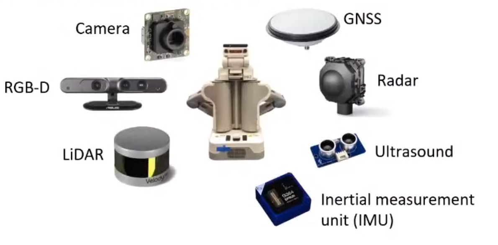
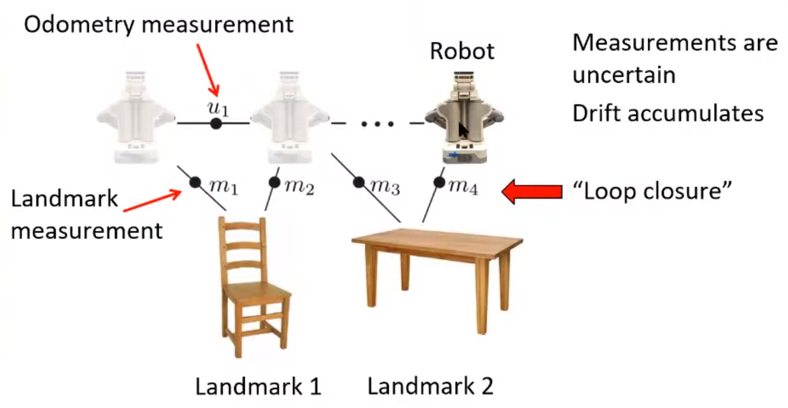

Tartan Series 2021 - Factor Graphs and Robust Perception (Prof. Michael Kaess)
Factor graphs
- 2001년에 확립된 개념
- Kschischang 2001 - Factor graphs and the sum-product algorithm
- Factor graph는 어떤 함수의 factorisation을 표현하는 이분 그래프이다.
- Factor graph는 Variable node와 Factor node로 이뤄진다.
- 로보틱스의 경우, variable node는 robot position, landmark position 등이 될 수 있다.
- Factor node는 measurement로부터 (i.e. 센서 값으로부터) 계산된 constraint가 된다.
- Factor graph를 이용해서 sum-product 문제를 풀 수 있다.
- Sum-product 문제에는 belief propagation, Viterbi, Kalman filter, turbo-codes, fast Fourier transform 등 다양한 알고리즘들이 있다.
- 이 문제들을 factor graph를 사용해서 풀 수 있다.
Factor graphs for robust perception

- 강인하게 localization, mapping, control 문제를 풀기 위해서는 여러가지 센서를 사용하는데, 이 때 factor graph를 통해서 다양한 센서들로부터 들어오는 measurement 값들과 최적화를 위한 constraint 값들을 모델링 할 수 있다.
- 그리고 이 모델들을 기반으로 문제를 해결할 수 있다 (i.e. inference).
SLAM and factor graphs

- SLAM에서 factor graph를 이용하는 방법은 다음과 같다.
- 처음 로봇이 켜지면 아무런 정보도 없다.
- 로봇이 카메라나 라이다 정보를 통해 어떠한 landmark와 연관된 정보를 얻게 된다.
- 이 때, 로봇의 입장에서 landmark의 위치를 추론할 수 있게 해주는 정보를 ‘landmark measurement’라고 한다.
- 카메라에서는 local feature의 (e.g. SIFT, ORB) 픽셀 위치가 될 수 있다.
- 라이다에서는 3D point의 위치가 될 수 있다.
- 추론된 landmark는 landmark 1,2,3 이렇게 저장된다.
- 이 때, 로봇의 입장에서 landmark의 위치를 추론할 수 있게 해주는 정보를 ‘landmark measurement’라고 한다.
- 로봇이 움직이면서 본인의 운동량에 대한 정보를 얻게 된다.
- Wheel odometry를 통해 이동한 거리에 대한 정보를 얻을 수 있다.
- IMU 센서 값을 dead reckoning을 통해 이동한 거리에 대한 정보를 얻을 수 있다.
- 카메라/라이다 odometry를 통해 이동한 거리에 대한 정보를 얻을 수 있다.
- 로봇이 움직이면서 새로운 landmark measurement를 가지게 되고, 새로운 landmark 정보를 계속 얻게 된다.
- 하지만 landmark measurement / odometry measurement에는 오차 값이 포함되므로 로봇의 위치에는 오차가 점점 쌓인다.
- 이 후, 로봇이 이전에 보았던 landmark를 다시 보게되었을 때 loop closure가 발동하게 된다.
- Loop closure가 발동하면, 해당 landmark를 보았던 시점에서부터 loop closure가 발동한 시점까지 이어져있는 모든 node/edge들은 최적화되면서 오차를 해소할 수 있다 (i.e. 로봇의 위치와 맵을 보정한다).
- 위에서 설명한 SLAM의 과정을 factor graph로 표현하면 다음과 같다.
- 중요한 점은, variable node 사이에 factor node가 올라가있는 형태가 아니다.
- 즉,
과 이 하나의 이라는 edge로 이어져있는 것이 아니다. - 실제로는
은 과 이어져있고, 이 과 이어져있는 것이다. - Edge는 node들 사이에 있는 것이며, 하나에 factor에는 여러개의 variable이 연결될 수 있다.
- 즉,
- 다양한 문제에 Factor graph를 적용한 모습이다.
- 예시로 보면, SLAM과 Structure from motion과 pose graph optimisation이 다른 형태를 가진 것을 볼 수 있다.
- SLAM은 landmark와 pose 정보를 모두 최적화 하는 것이다.
- Structure from motion은 SLAM에서 odometry measurement가 없는 형태이다 (즉, 시간 정보를 가지고 있지 않다).
- Pose graph optimisation은 SLAM에서 landmark 정보를 제거한 후 pose 값만 가지고 최적화를 하는 것이다.
- 그렇기 때문에 더 부정확할 수 밖에 없다.
- 하지만 계산량이 훨씬 적다.